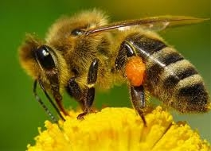
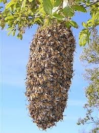

Opowieść o pszczołach i miodzie
(podstawowe wiadomości, głównie dla dzieci, ale nie tylko...)
napisał Zenon Ciechanowicz
Giżycko 2013
Dawno, dawno temu... w telewizji dzieci oglądały piękna bajkę o Pszczółce Mai i jej letnich przygodach. Pszczółka była na tyle sympatyczna, a jej przygody na tyle interesujące, że przed ekranami telewizorów usadawiały się nie tylko dzieci, ale często również dorośli.
Ta opowieść będzie również o pszczółce, jednak bezimiennej, mieszkającej w prawdziwym ulu. Główna różnica między pszczółką z ula na pasieczysku, a bajkową polega na tym, że prawdziwa pszczoła zajmuje się noszeniem miodu, a bajkowa Maja tym się nie interesowała...
W Pszczółce Mai wiele treści, np zwyczaje owadów, rośliny były przedstawione zgodnie z prawdą, ale my tu nie o tym.

Ul to domek, w którym żyją pszczoły, dzięki którym na naszych stołach pojawia się pożywny smakołyk, zwany miodem. Miejsce, w którym stoją ule, nazywa się pasieką. Osoba, która troszczy się o pszczoły, spędza przy nich wiele godzin, wie o ich życiu bardzo dużo, to pszczelarz. Miód to słodki, wspaniały przysmak. Warto nim smarować chleb jak najczęściej, tym bardziej, że nie szkodzi na zęby, odwrotnie zapobiega próchnicy.
Zapoznanie się z tą krótką opowieścią nie zrobi z czytelnika pszczelarza, ale przynajmniej w sposób bardzo ogólny zapozna z życiem pszczół i z tym, w jaki sposób i skąd się pojawia w ulach miód. Zapoznajmy się więc z życiem pszczół, bo są to owady, które prowadzą zaskakująco ciekawy tryb życia, ciężko pracują w zorganizowanej wielotysięcznej grupie, a z efektów ich pracy korzysta też człowiek. Prawdziwa pszczółka nie prowadzi tak beztroskiego życia jak Pszczółka Maja, lata celowo, wraca do ula obładowana słodkim nektarem, z którego powstaje bursztynowy miód. Skąd autor o tym wie? Od ponad pół wieku zajmuje się pszczołami, a ponadto o pszczołach przeczytał wiele różnych książek. Wie, że pszczoły, w krótkim czasie po wydostaniu się z komórki, przystępują do pracy i tak spędzają całe swe życie.
Tak naprawdę pszczoły nie przynoszą do ula miodu, tylko nektar. Często się mówi, że pszczoły noszą miód, to tzw. skrót myślowy. Nektar również jest słodki, ale zawiera znacznie więcej wody i dlatego jest bez porównania rzadszy. W nektarze też nie ma wielu składników, którymi pszczoły wzbogacają miód. Ciekawe jest też to, że po pokonaniu całej drogi przekształceń od nektaru do dojrzałego miodu, nie zmniejsza on swego aromatu. Nadal wydziela zapach tych kwiatów, z których został zebrany i jeśli jest ich wyraźna przewaga, to po zapachu można poznać z jakich roślin pochodzi miód, którym właśnie smarujesz chleb. Miód powstaje w wyniku wspólnej, wytężonej pracy wielu dziesiątków pszczół, czyli w rodzinie pszczelej. Żadna pojedyncza pszczoła nie jest w stanie wyprodukować miodu. Mało tego, żadna pszczoła nie jest w stanie wyżyć w samotności, w oderwaniu od rodziny pszczelej, bez względu na porę roku. Rodzina pszczela, to około dwudziestu tysięcy pszczół żyjących razem w okresie zimy i czasami ponad trzy razy więcej w okresie letnim. Każda taka rodzina musi mieć swój ul. Osłania on pszczoły ze wszystkich stron w pierwszej kolejności od niekorzystnych warunków atmosferycznych, takich jak wiatr, deszcz, zimno, ale i od różnych wrogów, chętnych na słodki przysmak. Naukowcy twierdzą, że pszczoły się pojawiły na ziemi znacznie wcześniej, niż człowiek. Rodzi się więc pytanie, jak sobie wtedy radziły, kto im budował pszczele domki? Kiedyś, przed laty rodzina pszczela mieszkała w lesie, w dziuplach drzew, zwanych barciami. Pierwsi pszczelarze nazywali się bartnikami. Szczególnie na początku, głównym zajęciem bartników było wydobywanie miodu nagromadzonego przez pszczoły w dziuplach. W tym celu stosowali różne metody, przeważnie ze szkodą dla pszczół. Często byli żądleni, ale to nie zniechęcało do pozyskiwania miodu. Widocznie już wtedy, bardzo dawno, nasi przodkowie zrozumieli, że miód jest nie tylko smaczny, ale również bardzo pożywny. Teraz fachowcy twierdzą, że spożywanie miodu wzmacnia nie tylko mięśnie, ale też przyczynia się do lepszej pracy mózgu. Miód zalecany jest i wskazany nie tylko dla kosmonautów i lotników, marynarzy i górników, ale również dla dzieci w wieku szkolnym, a nawet przedszkolnym. Fachowcy twierdzą, że dzieci spożywające miód mniej chorują i osiągają lepsze wyniki w nauce.
Minęły lata i bartnicy przekształcili się w pszczelarzy, którzy już nie biegają po lasach, nie szukają dzikich pszczół w dziuplach, nie wdrapują się na drzewa, by dostać się do miodu. Pszczelarze nauczyli się robić pszczele domki, które ustawiają w dogodnym miejscu, gdzie jest najwięcej kwiatów. Niektórzy nawet wędrują ze swymi pszczołami z miejsca na miejsce, oczywiście w okresie lata. Tu powstaje kolejne pytanie. Po co to robią? Czy nie lepiej, jeśli pszczoły będą stały w jednym miejscu? Pszczelarze wędrują z pszczołami na tak zwane pożytki. Są to takie miejsca, gdzie pszczoły, bez większych poszukiwań znajdują tysiące takich samych kwiatów w jednym miejscu, na przykład, rzepaku, gryki. Niezwykle miododajne są też dobrze znane drzewo - lipa i niewysoki krzew - malina. Miód zarówno z lipy, jak i maliny jest szczególnie aromatyczny i dobry na okres zimowy, kiedy szaleją zamiecie i mrozy. Chyba każdy z nas jadł owoce malin. Nie każdy jednak wie, że jeśli na kwiatki maliny przylatywały pszczoły, to owoce które potem się pojawią, będą większe i smaczniejsze. Jeśli spotkasz teraz gdzieś na kwiatku jakiegoś owada, to najprawdopodobniej będzie to pszczoła w trakcie pobierania nektaru lub kwiatowego pyłku. Pyłek jest pszczołom nie mniej potrzebny dla prawidłowego rozwoju, niż nektar.
cdn...